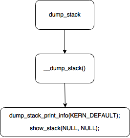
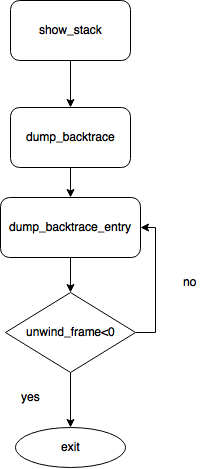

1 简介
说起 dump_stack() ，相信从事 Linux 内核或者驱动相关开发的同行对于此函数肯定不陌生。我们经常会用到此函数来对自己的代码进行 debug，可以快速帮助开发者理清函数调用流程，或者说解决 bug…… 首先我们来看一下 dump_stack 的打印，相信很多人都遇到过 :
1 | [ 4.778339] <1>-(1)[258:charger_thread]CPU: 1 PID: 258 Comm: charger_thread Tainted: G W 4.4.15+ #50 |
从打印可以清晰的了解程序到底发生了什么，这是一个很好用的函数，那么今天我们就来透过现象看本质，看看这个函数到底是何方神圣，怎么来实现这种功能的。
2 实现分析
通过 grep，发现 dump_stack 函数原型存在于 kernel/lib/dump_stack.c 文件中（注：笔者使用的是 4.4 版本的代码）。它的实现流程如下图所示：

可以看到关键的两个函数分别是 dump_stack_print_info 和 show_stack 。其中第一个函数是用来打印 info 信息的，而第二个函数是用来打印 Call trace 的。
Step 1: dump_stack_print_info
第一部分主要实现 print info ，函数比较简单，我们直接看代码：
void dump_stack_print_info(const char *log_lvl)
{
printk("%sCPU: %d PID: %d Comm: %.20s %s %s %.*s\n",
log_lvl, raw_smp_processor_id(), current->pid, current->comm,
print_tainted(), init_utsname()->release,
(int)strcspn(init_utsname()->version, " "),
init_utsname()->version);
if (dump_stack_arch_desc_str[0] != '\0')
printk("%sHardware name: %s\n",
log_lvl, dump_stack_arch_desc_str);
print_worker_info(log_lvl, current);
}
其实 print info 的关键信息就是一句代码实现的：
printk("%sCPU: %d PID: %d Comm: %.20s %s %s %.*s\n"，
log_lvl, raw_smp_processor_id(), current->pid, current->comm,
print_tainted(), init_utsname()->release,
(int)strcspn(init_utsname()->version, " "),
init_utsname()->version);
current 指针指向的是当前进程，那么这句代码就是分别打印出了：log_level, CPU id, command, kernel taint state, kernel version, 这样就和前面例子中的打印信息对上了 ~
关于这个 print_tainted() 函数，笔者也不甚了解，通过函数的注释可以知其一二：
/**
* print_tainted - return a string to represent the kernel taint state.
*
* 'P' - Proprietary module has been loaded.
* 'F' - Module has been forcibly loaded.
* 'S' - SMP with CPUs not designed for SMP.
* 'R' - User forced a module unload.
* 'M' - System experienced a machine check exception.
* 'B' - System has hit bad_page.
* 'U' - Userspace-defined naughtiness.
* 'D' - Kernel has oopsed before
* 'A' - ACPI table overridden.
* 'W' - Taint on warning.
* 'C' - modules from drivers/staging are loaded.
* 'I' - Working around severe firmware bug.
* 'O' - Out-of-tree module has been loaded.
* 'E' - Unsigned module has been loaded.
* 'L' - A soft lockup has previously occurred.
* 'K' - Kernel has been live patched.
*
* The string is overwritten by the next call to print_tainted().
*/
Step 2: show_stack
第二部分的主要功能是实现 Call trace ，它的执行流程如下：

unwind_frame 是判断是否到达栈底的函数，一个线程堆栈大小为 THREAD_SIZE，SP 寄存器存储的是栈顶，由此可以找到对应的栈底，如果没有到堆栈底部，则每次持续打印出相关的函数调用列表。
接下来就是另一个关键函数 dump_backtrace_entry ，看一下它的代码：
static void dump_backtrace_entry(unsigned long where)
{
/*
* Note that 'where' can have a physical address, but it's not handled.
*/
print_ip_sym(where);
}
static inline void print_ip_sym(unsigned long ip)
{
printk("[<%p>] %pS\n", (void *) ip, (void *) ip);
}
可以看到真正的打印函数也就一句代码，这个是真正的精髓所在：
printk("[<%p>] %pS\n", (void *) ip, (void *) ip);
把 %pS 作为格式化参数传递给 printk，printk 将负责把对应地址的函数名打印出来。由此看来，如何从地址转换到函数名这个最复杂的工作内核已经帮你做好了，dump stack 直接去用做好的轮子就行了。
3 关于堆栈
关于堆栈，首先要从 CPU 说起，以 ARM 32bit 为例来说，我们知道它有很多种 mode，usr/fiq/irq/svc/abt/und/sys。对于每一种 mode 都存在自己的堆栈，并由 SP 寄存器指定，由于进行模式切换就需要保护现场，因此不同 mode 的 SP 要设置为不同值。在内核态使用的都是 svc mode 的堆栈，那如何把不同线程的堆栈分开呢，实际上内核针对不同线程会分配不同的堆栈地址，而堆栈地址都被存在 task_struct 中，这样每次线程调度时就可以把相应的地址设置给 SP 寄存器，由此实现不同内核线程堆栈的切换。
再来说中断，不管 CPU 是在 usr mode 还是在 svc mode，只要中断到来都会使 CPU 进入到 irq mode，这是一种硬件行为，不过在这之后的处理就属于软件范畴了，kernel 中只是把 irq mode 作为一个中转状态，只存在了很短暂的时间，甚至中断处理程序都不再 irq mode 里执行。根据代码可知，经过短暂的 irq mode 中转后，CPU 会进入到 svc mode 来处理中断服务程序，此时使用的堆栈就是当前被中断进程的内核 svc 堆栈。
综上所述，dump_stack 其实就是根据当前 svc mode 的 SP 寄存器，打印出堆栈中的函数信息的。
4、总结
dump_stack 的实现流程其实都是基于如下两条关键代码：
printk("%sCPU: %d PID: %d Comm: %.20s %s %s %.*s\n"，
log_lvl, raw_smp_processor_id(), current->pid, current->comm,
print_tainted(), init_utsname()->release,
(int)strcspn(init_utsname()->version, " "),
init_utsname()->version);
以及
printk("[<%p>] %pS\n", (void *) ip, (void *) ip);
有了这两个作为基础，其实对于我们来说，实现一个自己的 dump stack 函数又有何难呢？这个任务就交给读者练习吧，相信一定会收获更多的！
This is copyright.